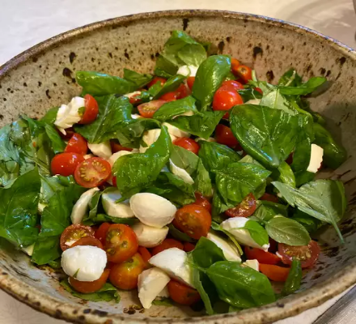

Back To the Main Page
Caprese

Italian Caprese Salad
This caprese salad features tomatoes, fresh mozzarella, and basil drizzled with a sweet balsamic reduction and olive oil.
Easy, impressive, and delicious! Most grocery stores now sell prepared balsamic reductions. Surprisingly it's just as good!
Ingredients:
- 1 cup balsamic vinegar
- 1/4 cup honey
- 3 large tomatoes, cut into 1/2-inch slices
- 1(16 ounce)package fresh mozzarella, cheese cut into 1/4-inch slices
- 1/4 teaspoon salt
- 1/4 teaspoon ground black pepper
- 1/2 teaspoon cup fresh basil leaves
- 1/4 cup extra-virgin olive oil
Directions:
Step 1
- Stir balsamic vinegar in small saucepan and place over high heat
- Bring to boil,reduce heat to low, and simmer until mixture has reduced to 1/3 cup, about 10 minutes
- Set aside to cool
Step 2
- Arrange alternating slice of tomato and mozzarella decoratively on a serving platter
- Sprinkle with salt and black papper, tuck basil leaves around slives
- Drizzle wih olive oil and balsamic reduction
Back to top